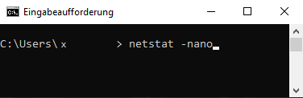
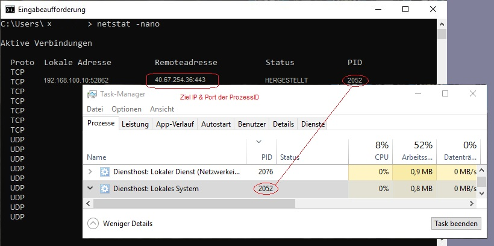

Ein Internet-Browser schickt seine Anfragen über:
HTTP, das Hypertext-Transfer Protocol
oder (heutzutage) vorzugsweise über das, besser gesicherte HTTPS (= HTTP Secure)
Ports sind wie Datenpacket-Tunnel.
Betriebssysteme stellen Portanfragen um Verbinndungen annehmen zu können.
Es gibt Standard-Ports, für bestimmte Programme fest-zugeordnete Portnummern.
HTTP läuft auf Port 80 über TCP. Das HTTP-S dagegen hat Port 443.
Wenn man im Windows Taskmanager (oder in Linux mit den Befehlen: top; ps; tree)
die "PID" (Prozess ID) eines laufenden Programms findet kann man diesen verwenden
um über den Befehl netstat -nano (<-Vorhanden in Windows und Linux) die Ports
und deren Adressierung, sprich deren IPs, ausfinding machen.

Die Ports benutzen 2 Arten von Protokolle. Entweder "TCP oder "UDP".
Ein Programm kann über mehrere Ports laufen und beide Protokolle verwenden.
TCP = Transmission Control Protocol / UDP = User Datagramm Protocol
Über TCP verlaufen Daten "zuverlässig" im bidirektionalem Datenaustausch,
ein Verlust von Datenpacketen wird hier verhindert.
Der Schwerpunkt dieses Protokolls ist die verbindungsorientierte Paketvermittlung,
wärend bei UDP nicht wichtig ist dass "alles" ankommt, sondern "konstant" übertragen
wird, mit geduldeden "Unterbrechungen", beispielsweise beim Stream gucken oder
bei Sprachübertragungen. Daher ist der Durchlass hier größer,
dafür aber unzuverlässiger als über TCP.
